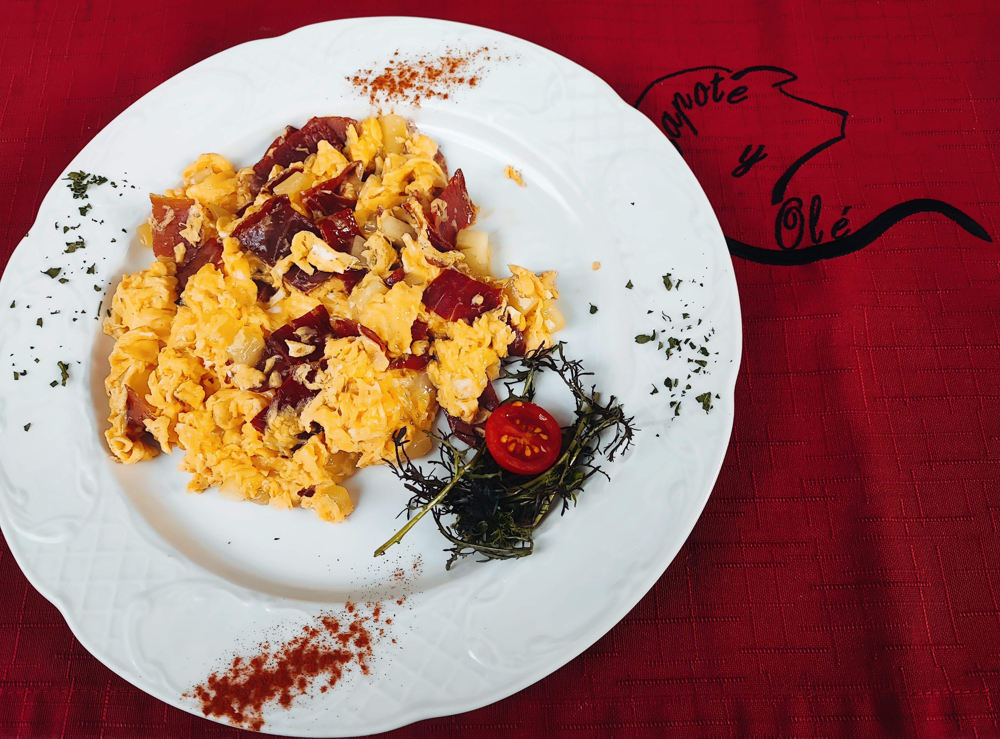
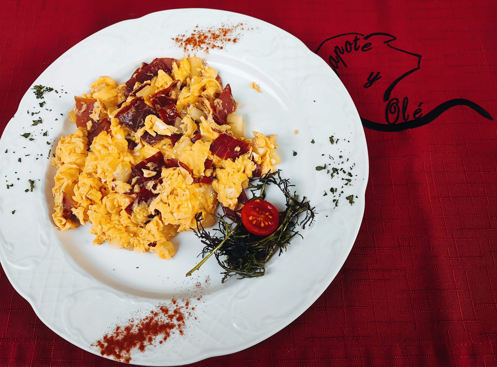

Capote y Olé prvi je španjolski restoran u Hrvatskoj. Ovaj šarmantni španjolski restoran smješten je u samom centru Rijeke, pokraj tržnice. U restoranu možete pronaći autentična španjolska jela, te se u sklopu restorana nalazi i shop u kojem možete kupiti španjolske delikatese.
 
